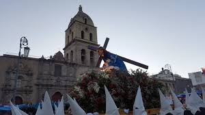
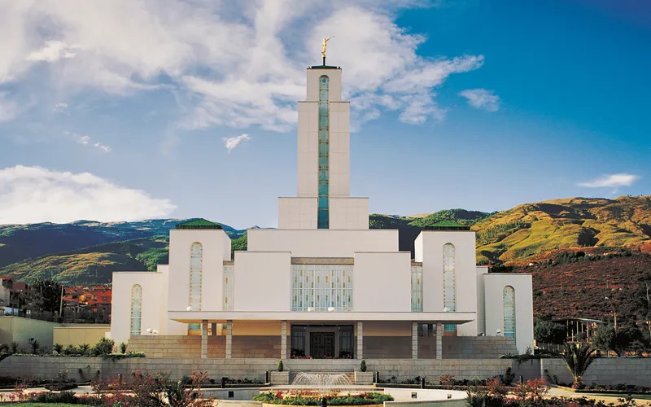
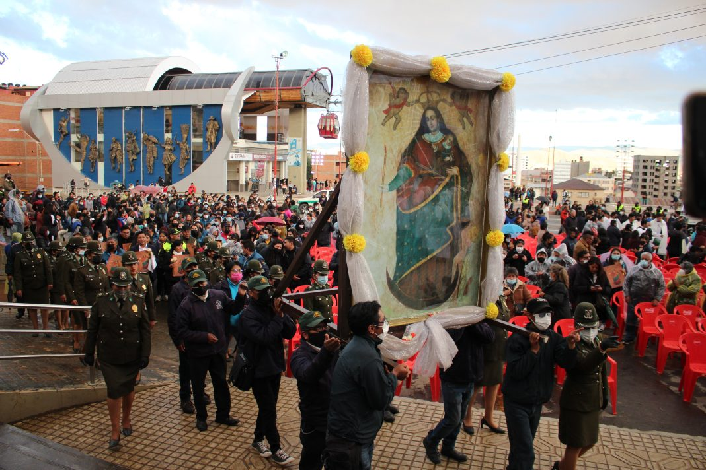
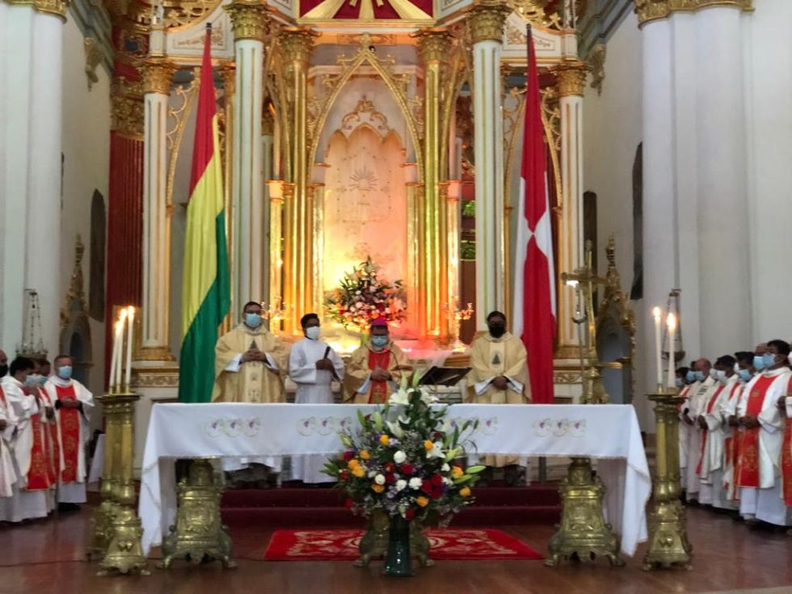
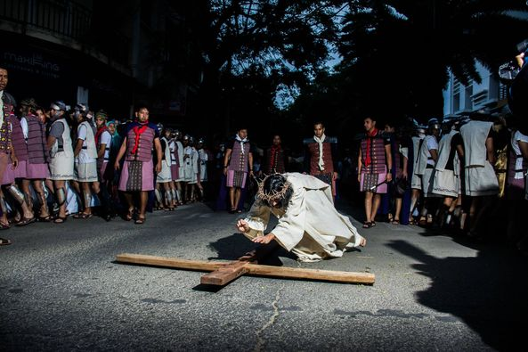
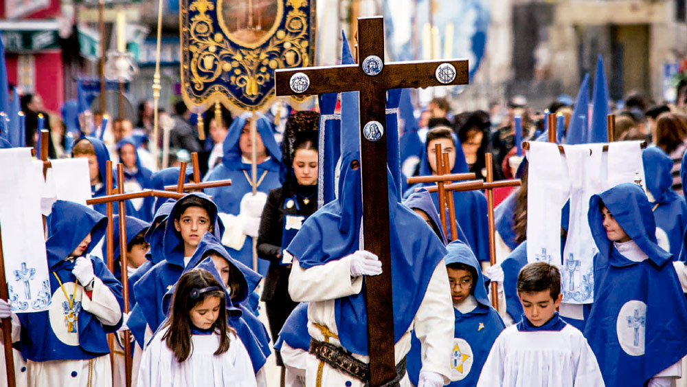
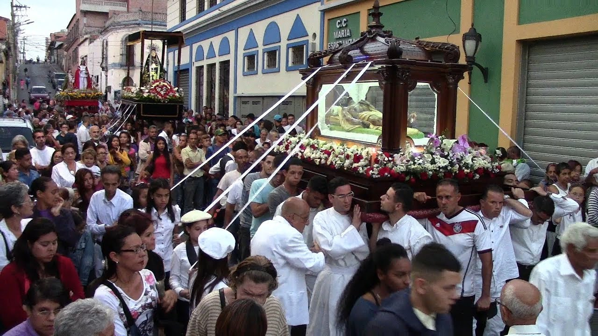
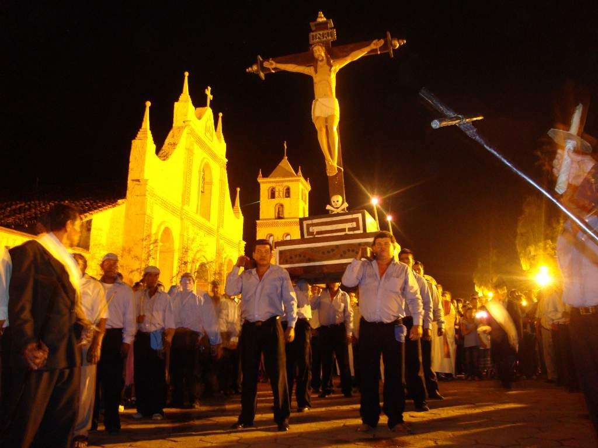

En La Paz se realiza la tradicional Procesión del Santo Sepulcro y la representación del Vía Crucis en zonas como Villa Fátima y el centro paceño.

En Santa Cruz, las familias asisten a la misa de Jueves Santo y preparan empanadas de queso y majadito de pescado.

En Cochabamba, la Semana Santa se celebra con visitas a siete templos el Jueves Santo y platillos como sopa de camarones y torrejas.

En Oruro se realizan dramatizaciones del Vía Crucis con participación masiva y procesiones al Santuario del Socavón.

Potosí conmemora Semana Santa con procesiones en su centro histórico y comidas tradicionales como la sopa de maní sin carne.

Tarija celebra con serenatas religiosas y misas campales. Se acostumbra comer chanfaina y locro de gallina.

En Beni, se celebran actos litúrgicos acompañados de música y danzas. La comida típica incluye pescado frito y yuca.

En Chuquisaca, se realizan peregrinaciones a templos coloniales y se consume el tradicional mondongo sin carne.

En Pando, la Semana Santa se vive con fe en comunidades rurales y urbanas, con celebraciones en iglesias y platos como el pescado al horno con plátano.
